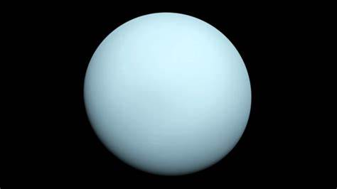

Uranus
Uranus is the seventh planet from the Sun. It is named after Greek sky deity Uranus, who in Greek mythology is the father of Cronus, a grandfather of Zeus and great-grandfather of Ares. Uranus has the third-largest planetary radius and fourth-largest planetary mass in the Solar System.
